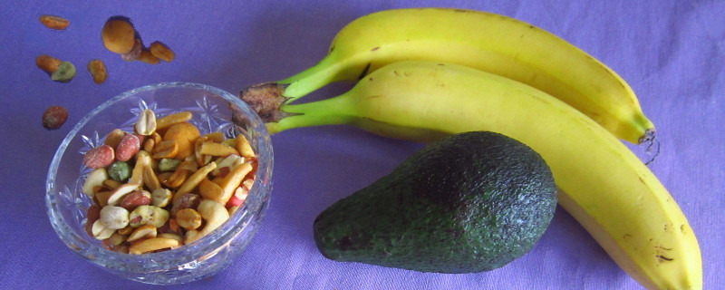

Идеи за похапване в офиса
Работата е изтощителна. Заредете се с енергия благодарение на тези храни.
Авокадо, ахъм
Един от най- полезните, а и най- вкусни източници на мазнини е авокадото. Но ако не познавате кога е готово, напълно е възможно първият ви сблъсък с този еволюционен анахронизъм да е бил неприятен (знаете ли, че авокадото е приспособено да бъде изяждано от мамути и други огромни бозайници, но някак си е оцеляло след изчезването им). И така, при избора на авокадо се гледа най- вече колко е меко. Щом е узряло, то е доста меко на пипане! Ако не е, просто се слага в тъмна торбичка, но ако е вече покафеняло, значи се разваля. Приготвя се или на салата с малко домати, червен лук и няколко капки лимон, или се маже на препечена филийка с малко сол и пипер, защото всъщност самия му вкус не е много обособен. Може и на сандвич. Готвачите го ползват и вместо масло.
О, сладки, сладки фурми
Любимата храна на бедуините, защото съдържат много енергия и не се развалят са фурмите. Сложете ги в малка кутийка, и се радвайте на сладостта им през целия ден.
...и други плодове
Бананът в винаги добре дошла алтернатива. Защото е много засищащ, а и богат на калий, който е полезен за сърцето. Ако пък си носите ябълка, полезен трик е да я разрежете и после да захванете частите с ластиче. Така не почва да покафенява, но е лесна за ядене.
Ядки
Понякога не е лесно да си набавиме протеини, особено ако сме вегетарианци. Тогава на помощ идват ядките. Хубавото е, че може да си приготвим смес с любимите си ядки и просто всеки път да си вземаме малка торбичка за работата. А и хрупането им е супер полезно за зъбите.
Енергийни блокчета, за енергия
Както и донякъде сусамовите, кокосови или други подобни блокчета. Необходимите продукти са (по избор):
- нещо за вкус: настъргани моркови, сусам, шоколад;
- пълнеж: банан, обикновени (бадемите или орехите са много подходящи) или овесени ядки;
- подправки: ванилия, канела, карамфил;
- нещо за спойка: мед, кленов сироп, кокосово масло, тахан, брашно и яйца.
Всичко се смесва в тиган, натиска се с намазнена шпатула, за да се оформи и сплеска, след което се слага в хладилника да се охлади. Разрязва се с остър нож на малки порции. Всеки ден по една. Полезно и вкусно!
Кисело мляко, но в твърда форма
Друга идея за смелите са замразено кисело мляко, може би някое с плодов вкус. Лесно е: сложете киселото мляко във формичка за лед и пъхнете в хладилника. Идеално за летните сутрини.
Салата в буркан
И накрая най- оригиналното хрумване, което може да приготвите предния ден, а именно салата в буркан. За да не се разваля, важното е дресинга, било то винегрет, ранчо или зехтинен сос, да е най- отдолу. Следват твърдите зеленчуци като моркови, чушки, краставици и така нататък. Над тях са чери доматите, лука и авокадото. После източниците на протеини като сирене, яйца или зелен фасул. И най- отгоре е мястото за зелената салата, марулята, спанака или подобни. А когато е време за ядене, стига всичко да се разтръска, за да се омеси и воала.
Добър апетит!
Отидете на страницата с материалите за седмично меню за попълване, готовo за печат.